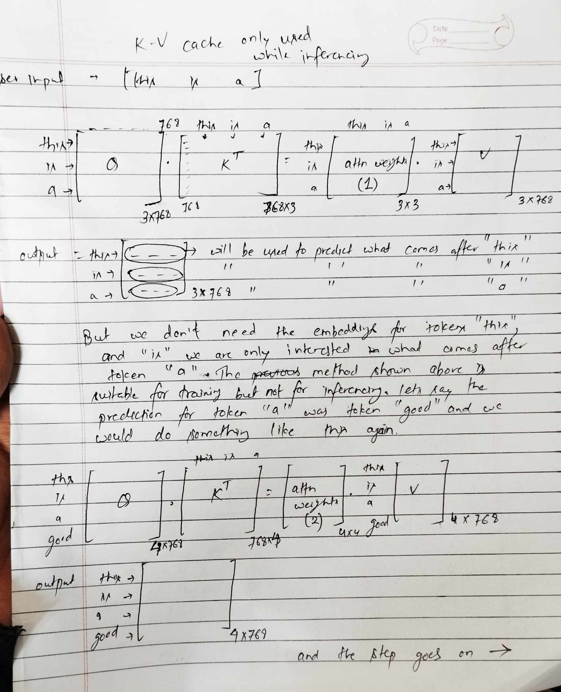
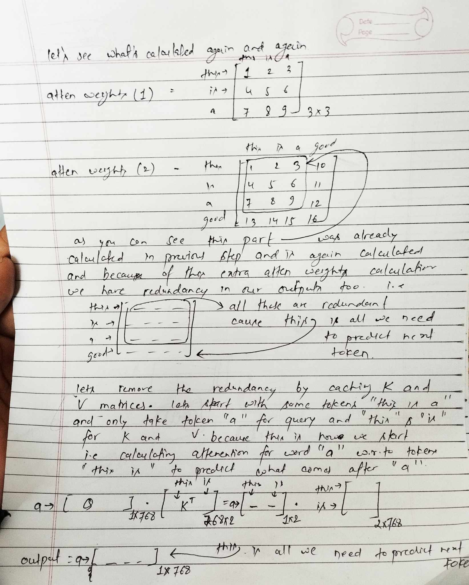
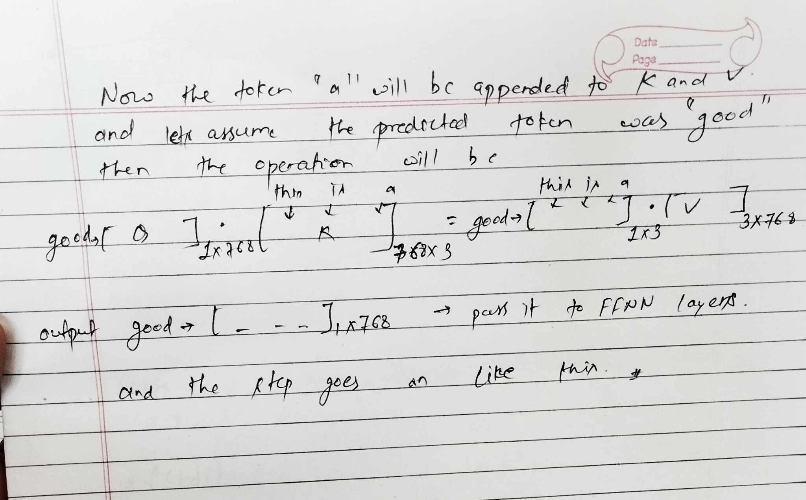
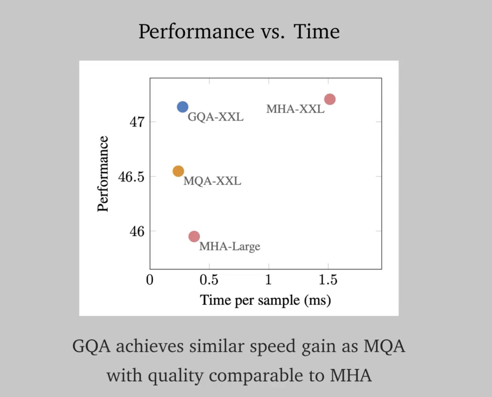
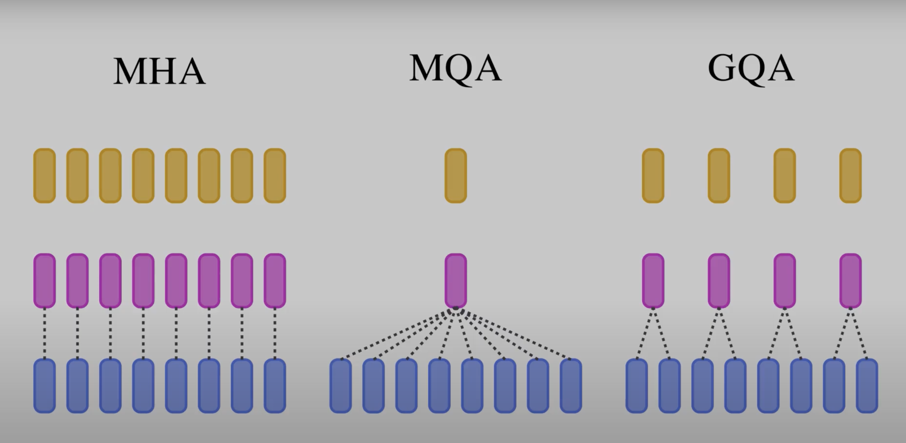

Kv Cache Gqa
18 Jan 2025 - cohlem
KV Cache
KV cache visual operation
In the note blow, I first describe how inferencing is done if we simply do operation without KV cache and then describe how KV cache helps removing redundant operations.
We don’t make use of KV cache while training because we already have data filled for each sequence length, we don’t need to calculate loss one by one, instead we do it in batches, whereas while inferencing we do it generally for 1 batch with some sequences and then we keep on appending next-predicted token to that sequence one by one. To understand better look at the notes below.

 
Memory needed for storing KV cache
let’s calculate total memory needed for storing KV cache
batch_size = 1 (for inferencing)
d_model = 4096
num_of_kv_heads = 32
head_dim = d_model/num_of_kv_heads = 128
seq_len = 10000
precision (fp16) = 2 bytes
2 (for k and v separately) x precision x head_dim x num_of_kv_heads x d_model x seq_len x batch_size = 5,24,28,80,000 bytes close to 5GB
lets say we have 7B parameter model, 7x10^9 x2 (bytes) = 14x10^9 bytes = 14GB
we need almost 1/3 total memory for inferencing.
Let’s explore the code for using KV cache in Llama models.
Please note I’ve modified some part of the original Llama code below to just explain the case of KV cache here.
@dataclass
class ModelArgs:
dim: int = 4096
n_layers: int = 32
n_heads: int = 32
n_kv_heads: int = 16 # modified to explain GQA
vocab_size: int = -1 # defined later by tokenizer
multiple_of: int = 256 # make SwiGLU hidden layer size multiple of large power of 2
ffn_dim_multiplier: Optional[float] = None
norm_eps: float = 1e-5
max_batch_size: int = 32
max_seq_len: int = 2048
Attention Architecture Code
you might be familiar with the code below if you’ve implemented attention mechanism on your own (more explanation below)
class Attention(nn.Module):
"""Multi-head attention module."""
def __init__(self, args: ModelArgs):
"""
Initialize the Attention module.
Args:
args (ModelArgs): Model configuration parameters.
Attributes:
n_kv_heads (int): Number of key and value heads.
n_local_heads (int): Number of local query heads.
n_local_kv_heads (int): Number of local key and value heads.
n_rep (int): Number of repetitions for local heads.
head_dim (int): Dimension size of each attention head.
wq (ColumnParallelLinear): Linear transformation for queries.
wk (ColumnParallelLinear): Linear transformation for keys.
wv (ColumnParallelLinear): Linear transformation for values.
wo (RowParallelLinear): Linear transformation for output.
cache_k (torch.Tensor): Cached keys for attention.
cache_v (torch.Tensor): Cached values for attention.
"""
super().__init__()
self.n_kv_heads = args.n_heads if args.n_kv_heads is None else args.n_kv_heads
# model_parallel_size = fs_init.get_model_parallel_world_size()
self.n_local_heads = args.n_heads
self.n_local_kv_heads = self.n_kv_heads
self.n_rep = self.n_local_heads // self.n_local_kv_heads
self.head_dim = args.dim // args.n_heads
self.wq = nn.Linear(
args.dim,
args.n_heads * self.head_dim,
bias=False,
)
self.wk = nn.Linear(
args.dim,
self.n_kv_heads * self.head_dim,
bias=False,
)
self.wv = nn.Linear(
args.dim,
self.n_kv_heads * self.head_dim,
bias=False,
)
self.wo = nn.Linear(
args.n_heads * self.head_dim,
args.dim,
bias=False,
)
self.cache_k = torch.zeros(
(
args.max_batch_size,
args.max_seq_len,
self.n_local_kv_heads,
self.head_dim,
)
)
self.cache_v = torch.zeros(
(
args.max_batch_size,
args.max_seq_len,
self.n_local_kv_heads,
self.head_dim,
)
)
def forward(
self,
x: torch.Tensor,
start_pos: int,
# freqs_cis: torch.Tensor,
mask: Optional[torch.Tensor],
):
"""
Forward pass of the attention module.
Args:
x (torch.Tensor): Input tensor.
start_pos (int): Starting position for caching.
freqs_cis (torch.Tensor): Precomputed frequency tensor.
mask (torch.Tensor, optional): Attention mask tensor.
Returns:
torch.Tensor: Output tensor after attention.
"""
bsz, seqlen, _ = x.shape
xq, xk, xv = self.wq(x), self.wk(x), self.wv(x)
xq = xq.view(bsz, seqlen, self.n_local_heads, self.head_dim)
xk = xk.view(bsz, seqlen, self.n_local_kv_heads, self.head_dim)
xv = xv.view(bsz, seqlen, self.n_local_kv_heads, self.head_dim)
# xq, xk = apply_rotary_emb(xq, xk, freqs_cis=freqs_cis)
self.cache_k = self.cache_k.to(xq)
self.cache_v = self.cache_v.to(xq)
self.cache_k[:bsz, start_pos : start_pos + seqlen] = xk
self.cache_v[:bsz, start_pos : start_pos + seqlen] = xv
keys = self.cache_k[:bsz, : start_pos + seqlen]
values = self.cache_v[:bsz, : start_pos + seqlen]
# Grouped Query Attention
# for production use repeat_kv function, it's memory efficient
## Repeat the key, values heads, repeats values at dim =2 self.n_rep times, now keys and values size match query size.
keys = torch.repeat_interleave(keys, dim=2, repeats=self.n_rep) # (bs, cache_len + seqlen, n_local_heads, head_dim)
values= torch.repeat_interleave(values, dim=2, repeats=self.n_rep) # (bs, cache_len + seqlen, n_local_heads, head_dim)
xq = xq.transpose(1, 2) # (bs, n_local_heads, seqlen, head_dim)
keys = keys.transpose(1, 2) # (bs, n_local_heads, cache_len + seqlen, head_dim)
values = values.transpose(1, 2) # (bs, n_local_heads, cache_len + seqlen, head_dim)
print(xq.shape)
print(keys.transpose(2,3).shape)
scores = torch.matmul(xq, keys.transpose(2, 3)) / math.sqrt(self.head_dim)
if mask is not None:
scores = scores + mask # (bs, n_local_heads, seqlen, cache_len + seqlen)
scores = F.softmax(scores.float(), dim=-1).type_as(xq)
output = torch.matmul(scores, values) # (bs, n_local_heads, seqlen, head_dim)
output = output.transpose(1, 2).contiguous().view(bsz, seqlen, -1)
return self.wo(output)
Inferencing code
This code generates embedding for next tokens by passing existing sequence of tokens to our attention layer (not FFNN) and append it to our existing sequence of tokens and pass it again to the attention layer and do it to generate it til 10 tokens.
import torch
import torch.nn as nn
import math
# Define a simple ModelArgs class for testing
# Initialize the Attention module
args = ModelArgs()
attn = Attention(args)
# Input sentence and tokenization
sentence = 'this is awesome'
tokens = sentence.split(' ')
# Hyperparameters
B = 1 # Batch size
T = len(tokens) # Sequence length
C = args.dim # Feature dimension
# Initialize input tensor with random values (for demonstration)
x = torch.randn(B, args.max_seq_len, C) # Shape: (batch_size, max_seq_len, feature_dim)
# Inference loop
start_pos = 0
for cur_pos in range(T, 10): # Generate tokens up to max_seq_len
# Forward pass through the attention module
out = attn(x[:, start_pos:cur_pos], start_pos, None) # Shape: (batch_size, cur_pos - start_pos, feature_dim)
# Update the input tensor with the output for the next position
x[:, cur_pos] = out[:, -1, :] # Take the last token's output and append it to the sequence
# Update start_pos for the next iteration
start_pos = cur_pos
# Final output
print("Final output tensor:")
print(x)
let’s break down the whole code one by one
# Initialize the Attention module
args = ModelArgs()
attn = Attention(args)
# Input sentence and tokenization
sentence = 'this is a'
tokens = sentence.split(' ')
# Hyperparameters
B = 1 # Batch size
T = len(tokens) # Sequence length
C = args.dim # Feature dimension
# Initialize input tensor with random values (for demonstration)
x = torch.randn(B, args.max_seq_len, C) # Shape: (batch_size, max_seq_len, feature_dim)
this is straightforward, we have initial sentence that we pass it to the model i.e “this is awesome”, construct a random input matrix “x” of (batch_size, max_seq_len, feature_dim). In real, these random input matrix is the matrix full of input embeddings.
start_pos = 0
the is the starting point for caching, since we haven’t cached anything yet, we start from the initial position i.e 0 for token “this”
for cur_pos in range(T, 10): # Generate tokens up to max_seq_len
# Forward pass through the attention module
out = attn(x[:, start_pos:cur_pos], start_pos, None) # Shape: (batch_size, cur_pos - start_pos, feature_dim)
# Update the input tensor with the output for the next position
x[:, cur_pos] = out[:, -1, :] # Take the last token's output and append it to the sequence
# Update start_pos for the next iteration
start_pos = cur_pos
we iterate from T,10 because we already have tokens til T and we want to generate 10-T tokens.
we pass the sequence from start_pos:cur_pos to our attn architecture.
first this will be x[:, 0:3] (which is the initial tokens “this is a”, because we first need to calculate the attention for these initial tokens and cache them first.
let’s directly come down to this part of code, because all other are usual code for attention without caching.
self.cache_k[:bsz, start_pos : start_pos + seqlen] = xk
self.cache_v[:bsz, start_pos : start_pos + seqlen] = xv
keys = self.cache_k[:bsz, : start_pos + seqlen]
values = self.cache_v[:bsz, : start_pos + seqlen]
as you can see we first cache xk to the positions [:bsz, start_pos : start_pos + seqlen]
which is basically caching this index of our input [:1, 0:3] which is basically the initially tokens (‘this is a’)
and then we pluck out the same tokens from our cached keys and cached values
keys = self.cache_k[:bsz, : start_pos + seqlen]
this plucking out will make sense in the next run.
now rest of the code in the attn class is executed and we get output same as the size of query i.e which is prediction for these positions [:bsz, start_pos : start_pos + seqlen]
and then we pluck out the last one, because its want we need and add it in the end of our input x[:, cur_pos] = out[:, -1, :].
now lets say the predicted token was “good”, we now have sequence “this is a good” and start_pos=3, and now in the next iteration cur_pos=4, we pass this input i.e (x[:, 3:4], 3, None) to our attention
as you can see this is simply the prediction from earlier iteration and this is what we pass, because we only need the embedding for this token “good”.
and then we only this new token in the code
self.cache_k[:bsz, start_pos : start_pos + seqlen] = xk
self.cache_v[:bsz, start_pos : start_pos + seqlen] = xv
self.cache_k[:bsz, 3:3 + 1], as you can see we are just appending this new token to the preivous cache to be used in the later iteration.
now we pluck out this cache
keys = self.cache_k[:bsz, : start_pos + seqlen]
values = self.cache_v[:bsz, : start_pos + seqlen]
i.e keys = self.cache_k[:bsz, :3+1] which is the key and values cache til that token and simply calculate the attention scores and apply them, and this process goes on until the required sequence is generated (in our case 10)
This is all we need to know about KV cache.
Grouped Query Attention
Explanation
As we know the main bottleneck while training and inferencing is not the amount of operations that our GPU can perform but rather the amount of data our GPU can move between tensor cores and the GPU memory. This is what GQA tries to solve, it tries to achieve balance between the accuracy of Multi-Head Attention (it performs better than these attention variants) and speed of attention calculation. 
The picture below accurately explains Multi-Head Attention (MHA), Multi-Query Attention (MQA) and Grouped Query Attention (GQA)
The main difference between them is:
- MHA : Q,K,V are divided into equal number of heads
- MQA: Only Q is divided into different heads, whereas K,V remain the same. However, the resulting number of attention heads are the same as MHA. (K,V are same, we don’t have to move data back and forth, this is where it helps in achieving performance gains.)
- GQA: Query is divided into total number of heads but mainly in groups, and K, V have different number of heads mainly referred to as kv_heads. As shown in the figure, similar group of query interact with their respective heads. 
Code for GQA
keys = torch.repeat_interleave(keys, dim=2, repeats=self.n_rep) # (bs, cache_len + seqlen, n_local_heads, head_dim)
values= torch.repeat_interleave(values, dim=2, repeats=self.n_rep) #
The way this code works is just by duplicating the keys and values across the dim=2, self.n_rep number of times. This self.n_rep is obtained by dividing self.n_local_heads by self.n_local_kv_heads.
For instance, lets say our keys were (2,2,2,4) ( # (bs, cache_len + seqlen, n_local_kv_heads, head_dim))
The dimension across n_local_kv_heads will be repeated self.n_rep times,
a = torch.randn(2,2,2,4) # B,T,n_kv_head, head_dim
a
tensor([[[[ 0.6406, -1.2496, 0.9831, -0.3773],
[ 1.0520, 0.5683, 0.6138, 0.0082]],
[[-0.6792, 1.0518, 0.6339, 0.9386],
[-0.0693, 0.8445, 1.8666, 1.6446]]],
[[[-0.5852, -1.5809, -0.3186, 1.2536],
[-0.9714, 0.4342, -1.0229, 0.1140]],
[[-0.4645, 0.6589, -0.6345, 0.9500],
[ 0.3443, -0.7342, -0.0163, 0.3242]]]])
torch.repeat_interleave(a, dim=2, repeats=2)
tensor([[[[ 0.6406, -1.2496, 0.9831, -0.3773],
[ 0.6406, -1.2496, 0.9831, -0.3773],
[ 1.0520, 0.5683, 0.6138, 0.0082],
[ 1.0520, 0.5683, 0.6138, 0.0082]],
[[-0.6792, 1.0518, 0.6339, 0.9386],
[-0.6792, 1.0518, 0.6339, 0.9386],
[-0.0693, 0.8445, 1.8666, 1.6446],
[-0.0693, 0.8445, 1.8666, 1.6446]]],
[[[-0.5852, -1.5809, -0.3186, 1.2536],
[-0.5852, -1.5809, -0.3186, 1.2536],
[-0.9714, 0.4342, -1.0229, 0.1140],
[-0.9714, 0.4342, -1.0229, 0.1140]],
[[-0.4645, 0.6589, -0.6345, 0.9500],
[-0.4645, 0.6589, -0.6345, 0.9500],
[ 0.3443, -0.7342, -0.0163, 0.3242],
[ 0.3443, -0.7342, -0.0163, 0.3242]]]])
you can see how the values are copied one by one 2 times for this scenario.
BUT, this simply copies the numbers twice, there’s another way that’s used in Llama code
def repeat_kv(x: torch.Tensor, n_rep: int) -> torch.Tensor:
"""torch.repeat_interleave(x, dim=2, repeats=n_rep)"""
bs, slen, n_kv_heads, head_dim = x.shape
if n_rep == 1:
return x
return (
x[:, :, :, None, :]
.expand(bs, slen, n_kv_heads, n_rep, head_dim)
.reshape(bs, slen, n_kv_heads * n_rep, head_dim)
)
It performs the same operation as torch.repeat_interleave, but the in a more memory efficient way.
x[:, :, :, None, :] adding None will add one extra dimension to our vector. its shape will be (2,2,2,1,4)
.expand(bs, slen, n_kv_heads, n_rep, head_dim) will expand(repeat) the the singleton dimension i.e our dimension 3 to n_rep, it will repeat n_rep times but not by copying the same elements but by creating a new view for that dimension which points to the same old memory location, and then we reshape it to (bs, slen, n_kv_heads * n_rep, head_dim).
By not copying and simply creating a new view, it saves memory.